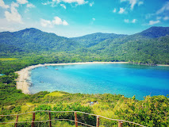

Callao Cave
Spelunking/Caving:
Explore the seven chambers of the main cave. Sightseeing: Witness the iconic natural skylight illuminating the cave's third chamber, which serves as a natural chapel. River Cruising: Take a boat ride along the Pinacanauan River at dusk to witness the spectacular "Circadian Bat Flight" where millions of bats exit the nearby Bat Cave to forage.

Palaui Island
Trekking/Hiking:
Trek through coastal communities, forests, and grasslands to reach the Cape Engaño Lighthouse. Sightseeing: Enjoy breathtaking 360-degree views of the sea, the island, and the Dos Hermanas Islands from the lighthouse.Beach Bumming/Swimming:
Relax on the pristine white sands of beaches like Anguib Beach and Nangaramoan White Sand Beach (often done as part of the Palaui Island tour). Snorkeling/Diving: Explore the island's protected marine sanctuary.Iguig Calvary Hills
Pilgrimage/Meditation:
Walk and reflect on the life-sized 14 Stations of the Cross, especially during Holy Week/Lent. Sightseeing: Enjoy the scenic, tranquil view of the Cagayan River (Rio Grande de Cagayan, the longest river in the Philippines) from atop the rolling hills
Basilica Minore of Our Lady of Piat
Pilgrimage/Woship:
Attend mass and offer prayers at this major Marian pilgrimage site. Cultural Observation: Observe the deep-rooted religious devotion of the local Itawes and Ibanag people.Tuguegarao City & Cagayan
Historical Sightseeing:
Admire the grand, Baroque-style architecture and the red-brick facade of the largest cathedral in the region. Photo Opportunity: Take pictures of this significant religious and historical landmark in the regional center.